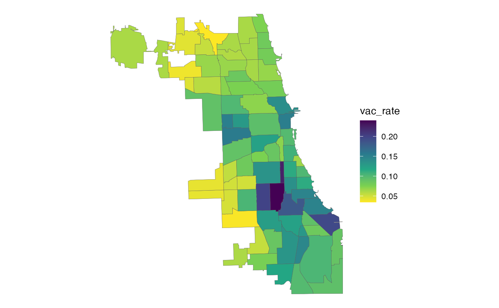

This table contains a set of factors to apportion Census block group-level data among Chicago Community Areas (CCAs). Seperate factors are provided for apportioning housing unit, household, and population attributes. All factors were determined by calculating the percentage of a block group's housing units, households and population that were located in each of its component blocks, according to the 2010 Decennial Census, and then assigning each block to a CCA (based on the location of the block's centroid point).
xwalk_blockgroup2cca
A tibble with 2180 rows and 5 variables:
Unique 12-digit block group ID, assigned by the Census
Bureau. Corresponds to blockgroup_sf. Character.
Numeric CCA ID, as assigned by the City of Chicago.
Corresponds to cca_sf. Integer.
Proportion of the block group's housing units (occupied or vacant) located in the specified CCA. Multiply this by a block group-level measure of a housing attribute (e.g. vacant homes) to estimate the CCA's portion. Double.
Proportion of the block group's households (i.e. occupied housing units) living in the specified CCA. Multiply this by a block group-level measure of a household attribute (e.g. car-free households) to estimate the CCA's portion.Double.
Proportion of the block group's total population (including group quarters) living in the specified CCA. Multiply this by a block group-level measure of a population attribute (e.g. race/ethnicity) to estimate the CCA's portion. Double.
Generally speaking, block group boundaries align neatly with CCA boundaries
as they tend to follow similar features (e.g. rivers, major roads, rail
lines) but there are cases where the population, households and/or housing
units in a block group are split across multiple CCAs, or else are partially
within the City of Chicago and partially outside of it. For that reason, it
is not appropriate to use a one-to-one block group-to-CCA assignment to
apportion Census data among CCAs, and this crosswalk (or xwalk_tract2cca
for tract-level data) should be used instead.
To use this crosswalk effectively, Census data should be joined to it (not
vice versa, since block group IDs appear multiple times in this table). Once
the data is joined, it should be multiplied by the appropriate factor
(depending whether the data of interest is measured at the housing unit,
household or person level), and then the result should be summed by CCA. If
calculating rates, this should only be done after the counts have been summed
to CCA. The resulting table can then be joined to cca_sf for mapping, if
desired.
If your data is only available at the tract level, you can use
xwalk_tract2cca for a tract-level allocation instead.
#>#> ✔ tibble 3.1.0 ✔ dplyr 1.0.5 #> ✔ tidyr 1.1.3 ✔ stringr 1.4.0 #> ✔ readr 1.4.0 ✔ forcats 0.5.1 #> ✔ purrr 0.3.4#> Conflicts ────────────────────────────────────────── tidyverse_conflicts() ── #> ✖ dplyr::filter() masks stats::filter() #> ✖ dplyr::lag() masks stats::lag()# View the block groups with households not fully contained in a single CCA filter(xwalk_blockgroup2cca, hh_pct < 1)#> # A tibble: 21 x 5 #> geoid_blkgrp cca_num hu_pct hh_pct pop_pct #> <chr> <int> <dbl> <dbl> <dbl> #> 1 170310902004 9 0.947 0.949 0.954 #> 2 170310903001 9 0.958 0.956 0.951 #> 3 170314314001 43 1 1.00 1 #> 4 170315205003 52 0.992 0.991 0.987 #> 5 170315205003 55 0.00828 0.00866 0.0129 #> 6 170315206001 52 0.993 0.992 0.992 #> 7 170315206001 55 0.00726 0.00760 0.00786 #> 8 170315705002 57 0.987 0.987 0.980 #> 9 170315705002 62 0.0125 0.0134 0.0199 #> 10 170315805011 58 1 1.00 1 #> # … with 11 more rows# Estimate CCA-level unemployment rate from block group-level ACS data df_blkgrp <- tidycensus::get_acs( "block group", state = "IL", county = "031", table = "B23025", year = 2019, survey = "acs5", output = "wide" ) %>% rename(civ_lf = B23025_003E, unemp = B23025_005E) %>% select(GEOID, civ_lf, unemp)#>#>df_cca <- xwalk_blockgroup2cca %>% left_join(df_blkgrp, by = c("geoid_blkgrp" = "GEOID")) %>% mutate(civ_lf = civ_lf * pop_pct, unemp = unemp * pop_pct) %>% group_by(cca_num) %>% summarize_at(vars(civ_lf, unemp), sum) %>% mutate(unemp_rate = unemp / civ_lf) df_cca#> # A tibble: 77 x 4 #> cca_num civ_lf unemp unemp_rate #> <int> <dbl> <dbl> <dbl> #> 1 1 32157 1734 0.0539 #> 2 2 37893 2736 0.0722 #> 3 3 37513 1509 0.0402 #> 4 4 27366 1206 0.0441 #> 5 5 21857 572 0.0262 #> 6 6 75850 2153 0.0284 #> 7 7 46846 1255 0.0268 #> 8 8 65253 1819 0.0279 #> 9 9 6289. 97.7 0.0155 #> 10 10 20303. 741. 0.0365 #> # … with 67 more rows# Join to cca_sf for mapping cca_sf %>% left_join(df_cca, by = "cca_num") %>% ggplot() + geom_sf(aes(fill = unemp_rate)) + scale_fill_viridis_c(direction = -1) + theme_void()